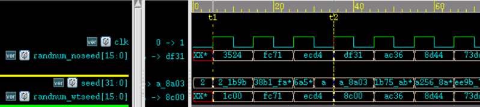
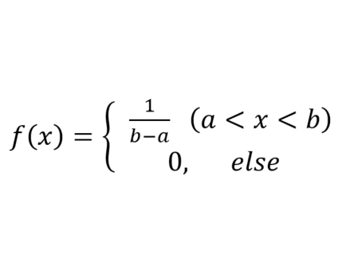
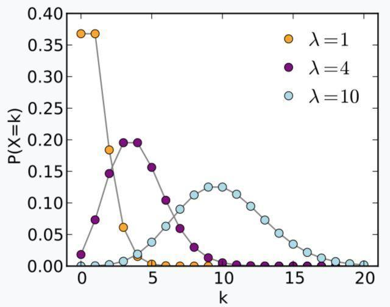
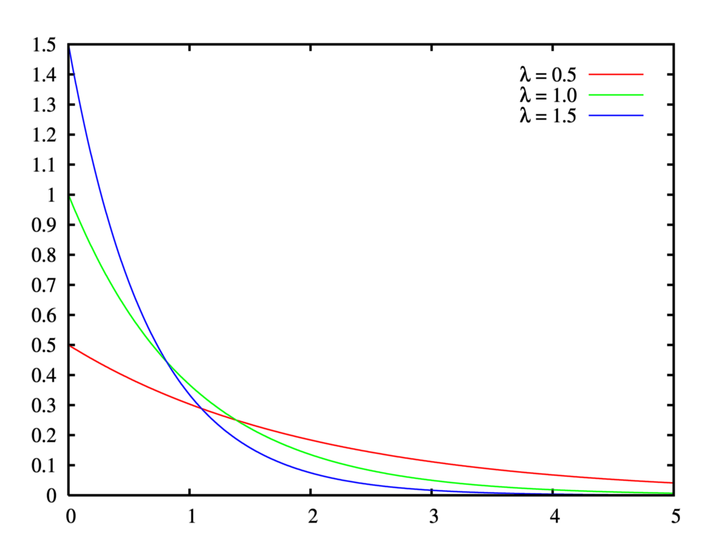
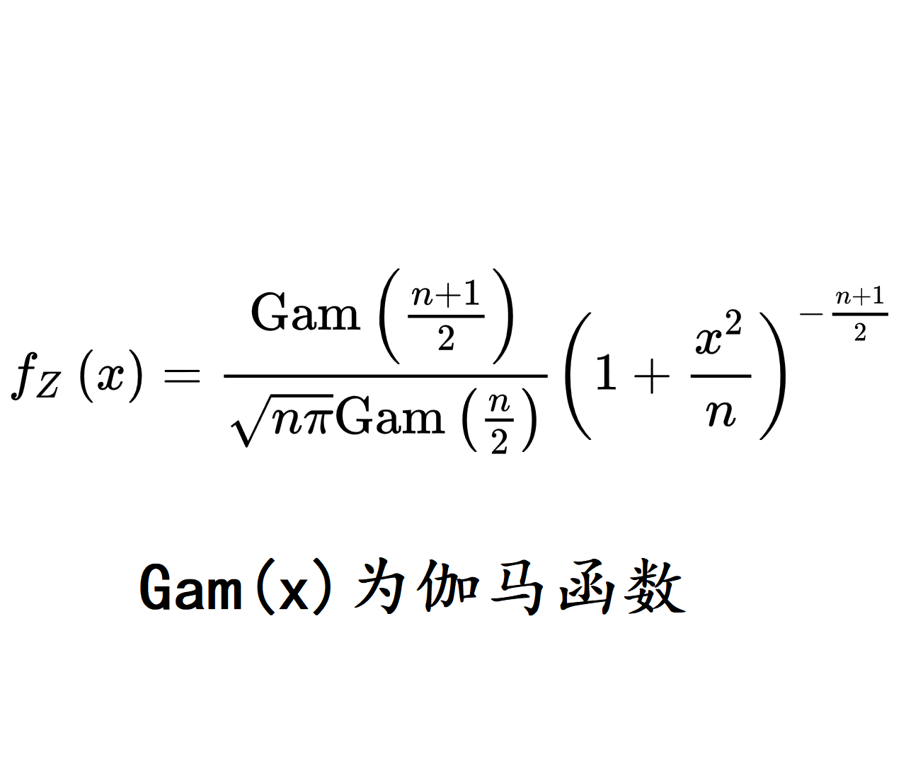
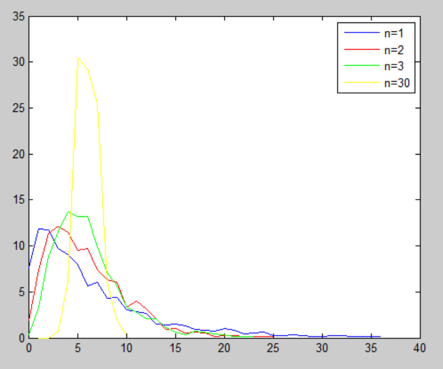
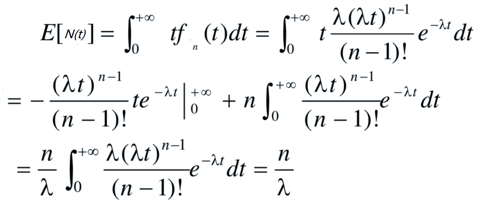

Random Numbers
In Verilog, the system task $random(seed) is used to generate random numbers, where seed is the random number seed.
Different seed values produce different random numbers. If the seed is the same, the generated random numbers are also the same.
You can assign an initial value to seed, or omit the seed option; the default initial value of seed is 0.
The following code shows how to call $random without using the seed option, and with specifying and modifying the seed:
Example
integer seed ;
initial begin
seed = 2 ;
#30 ;
seed = 10 ;
end
//no seed
reg [15:0] randnum_noseed ;
always@(posedge clk) begin
randnum_noseed <= $random(); // Not specifying the random seed
end
//with seed
reg [15:0] randnum_wtseed ;
always@(posedge clk) begin
randnum_wtseed <= $random(seed); // Specify the random seed
end
The simulation waveform is as follows.

Whether or not an initial value is assigned, each time a random number is generated, the seed value changes, and the random number changes accordingly.
Each time the seed value is changed, the current output random value changes; however, at the next state, the trend of the random number returns to the internal random sequence generated by the system.
For example, in the simulation diagram, at times t1 and t2 the random seeds are different, so the generated random numbers are also different. But during other clock cycles, the generated random numbers are the same.
It is recommended not to specify the seed option when calling the system task $random, or to use a variable to pass the parameter when specifying the seed option.
It is not recommended to write a constant to the seed parameter when calling $random. In this case, the seed value is fixed, and only one random number may be generated. For example, the following coding style is not recommended:
randnum_wtseed <= $random(2); //不建议将常数项指定给 seed
You can use the modulo operation to limit random numbers to a certain data range. For example:
Example
parameter MAX_NUM = 512;
parameter MIN_NUM = 256;
reg [15:0] num_range1, num_range2, num_range3 ;
always@(posedge clk) begin
// The generated random numbers range from -511 to 511, ±(MAX_NUM-1)
num_range1 <= $random() % MAX_NUM;
// The generated random numbers range from 0 to 511, (0 ~ MAX_NUM-1)
num_range2 <= {$random()} % MAX_NUM;
// The generated random numbers range from MIN_NUM to MAX_NUM, inclusive of boundaries
num_range3 <= MIN_NUM + {$random()} % (MAX_NUM-MIN_NUM+1);
end
The random numbers are displayed in signed decimal format. The first few data results are as follows:

Probability Distributions
Verilog provides many system tasks that generate data according to certain probability distributions. A brief description is as follows:
| System Task | Call Format | Task Description |
|---|---|---|
| Uniform Distribution | $dist_uniform(seed, start, end); | start and end are the beginning and end of the data |
| Normal Distribution | $dist_normal (seed, mean, std_dev); | mean is the expectation, std_dev is the standard deviation |
| Poisson Distribution | $dist_poisson(seed, mean); | mean is the expectation (equal to the standard deviation) |
| Exponential Distribution | $dist_exponential(seed , mean); | mean is the number of event occurrences per unit time |
| Chi-Square Distribution | $dist_chi_square(seed, free_deg); | free_deg is the degrees of freedom |
| t Distribution | $dist_t(seed, free_deg); | free_deg is the degrees of freedom |
| Erlang Distribution | $dist_erlang(seed, k_stage, mean); | k_stage is the number of stages, mean is the expectation |
Uniform Distribution
A uniform distribution has equal probabilities of taking values in intervals of equal length.
The probability density function and probability distribution diagram are as follows:


In fact, the system task $random implements a uniform distribution.
The code for calling $dist_uniform to generate uniformly distributed data over the interval (256, 512) is as follows:
Example
reg [15:0] data_uniform;
always@(posedge clk) begin // Generate random numbers between MIN_NUM and MAX_NUM
data_uniform <= $dist_uniform(seed_dis, MIN_NUM, MAX_NUM);
end
Normal Distribution
The mathematical expectation of a normal distribution is μ, the standard deviation is σ, denoted asN (μ, σ²)。
A normal distribution with mathematical expectation 0 and standard deviation 1 is called the standard normal distribution.
The normal distribution curve is bell-shaped, low on both sides, high in the middle, and symmetric left and right.
The probability density function and distribution diagram of the normal distribution are as follows:


The code for calling $dist_normal to generate standard normal distribution data with expectation 0 and standard deviation 1 is as follows:
Example
reg [15:0] data_normal;
always@(posedge clk) begin // Standard normal distribution with expectation 0 and standard deviation 1
data_normal <= $dist_normal(seed_dis, 0, 1);
end
Poisson Distribution
The Poisson distribution is used to describe the probability that an event occurs X times within a certain time or space range.
The Poisson distribution has the same mathematical expectation and standard deviation, both equal to λ. Its probability density function and distribution diagram are as follows:


The code for calling $dist_poisson to generate Poisson distribution data with an expectation of 4 is as follows:
Example
reg [15:0] data_poisson;
always@(posedge clk) begin
data_poisson <= $dist_poisson(seed_dis, 4);
end
Exponential Distribution
The exponential distribution is used to describe the probability of the time interval between occurrences of random events in a Poisson process. A Poisson process is a process in which events occur continuously and independently at a constant average rate. For example, the time interval between arrivals of two buses while waiting at a bus stop follows an exponential distribution.
Let λ>0 be the number of event occurrences per unit time (also called the rate parameter), and x be the time interval between event occurrences. Then its probability density function and distribution diagram are as follows:


The code for calling $dist_exponential to generate exponential distribution data with a rate parameter of 1 is as follows:
Example
reg [15:0] data_exp;
always@(posedge clk) begin
data_exp <= $dist_exponential(seed_dis, 1);
end
Chi-Square Distribution
The distribution law of a new random variable formed by the sum of squares of n random variables that follow the standard normal distribution is called the chi-square distribution, denoted as , where n is called the degrees of freedom.
, where n is called the degrees of freedom.
The probability density function and distribution diagram of the chi-square distribution are as follows:


The code for calling $dist_chi_square to generate chi-square distribution data with 6 degrees of freedom is as follows:
Example
reg [15:0] data_chi_sq;
always@(posedge clk) begin
data_chi_sq <= $dist_chi_square(seed_dis, 6);
end
t Distribution
Assume X follows the standard normal distribution N(0, 1), and Y follows the chi-square distributionThe distribution of ... is called the t distribution with n degrees of freedom, denoted as Z ~ t(n).
The t distribution is used to estimate the population mean of a data variable that is normally distributed with unknown variance based on small samples. If the sample size is large enough and the population variance is known, then the normal distribution should be used to estimate the population mean.
The t distribution is a symmetric bell-shaped distribution, similar to the normal distribution, but with heavier tails, which means it is more likely to produce values far below the mean. Its probability density function and distribution diagram are as follows:


The code for calling $dist_t to generate t distribution data with 5 degrees of freedom is as follows:
Example
reg [15:0] data_t;
always@(posedge clk) begin
data_t <= $dist_t(seed_dis, 5);
end
Erlang Distribution
Let V1, V2, ..., Vn be mutually independent in a Poisson process with parameter λ, and let N(t) denote the number of random points in [0, t). Then the distribution of N(t) = V1 + V2 + ... + Vn is called the Erlang distribution.
The Erlang distribution, like the exponential distribution, is often used to represent the time interval between independent random events. A random variable following the Erlang distribution can be decomposed into the sum of multiple exponential distribution random variables with the same parameter, making the Erlang distribution widely used in reliability theory and queuing theory.
The probability density function and distribution diagram of the Erlang distribution are as follows:


Why The Face? You actually use such a fruity idea to pad out the Erlang distribution?
The probability distribution tasks above only list the calling methods, without analyzing or verifying the data. The following introduces how to use the Matlab plotting tool to analyze the characteristics of the data generated by the probability distribution task $dist_erlang by yourself.
The code for calling $dist_erlang to generate Erlang distribution data with order 3 and expectation 6 is as follows:
Example
reg [15:0] data_erlang;
always@(posedge clk) begin
data_erlang <= $dist_erlang(seed_dis, 3, 6);
end
Data Analysis
Reality proves that it is more convenient to analyze familiar distribution data. On some platforms, referenceable built-in functions related to the Erlang distribution are few and far between. Knowing full well there is no love (Erlang), we still go for love!
Verilog Data Files
First, generate 4 sets of data following the Erlang distribution in the Verilog model and print them to a file.
Example
integer fd1, fd2, fd3, fd30 ;
initial begin
fd1 = $fopen("data_erlang1.hex", "w");
fd2 = $fopen("data_erlang2.hex", "w");
fd3 = $fopen("data_erlang3.hex", "w");
fd30 = $fopen("data_erlang30.hex", "w");
repeat(1000) begin //Take 1000 data for analysis
@(posedge clk) ;
#1 ;
$fdisplay(fd1, "%h", data_erlang1);
$fdisplay(fd2, "%h", data_erlang2);
$fdisplay(fd3, "%h", data_erlang3);
$fdisplay(fd30, "%h", data_erlang30);
end
$fclose(fd1);
$fclose(fd2);
$fclose(fd3);
$fclose(fd30);
end
reg [15:0] data_erlang1;
reg [15:0] data_erlang2;
reg [15:0] data_erlang3;
reg [15:0] data_erlang30;
always@(posedge clk) begin
data_erlang1 <= $dist_erlang(seed_dis, 1, 6);
data_erlang2 <= $dist_erlang(seed_dis, 2, 6);
data_erlang3 <= $dist_erlang(seed_dis, 3, 6);
data_erlang30 <= $dist_erlang(seed_dis, 30, 6);
end
Verilog Data Analysis
In Matlab, the histogram function hist can be used directly to statistically plot and display each data, but for probability distribution, the actual plotting effect of this function is not very good (welcome to provide a better plotting method). Here, the Matlab tabulate function is used to count each data, and then the ordinary plot function is used to display its percentage.
The code for Matlab to read the data generated by the Verilog module and display its distribution plot is as follows.
Example
%=======================================================
% data analysis from $dist_erlang in Verilog
%=======================================================
%Read as strings, then convert from hexadecimal to decimal.
data_erlang1_hex = textread('data_erlang1.hex', '%s') ;
data_erlang2_hex = textread('data_erlang2.hex', '%s') ;
data_erlang3_hex = textread('data_erlang3.hex', '%s') ;
data_erlang30_hex = textread('data_erlang30.hex', '%s') ;
data_erlang1 = hex2dec(data_erlang1_hex);
data_erlang2 = hex2dec(data_erlang2_hex);
data_erlang3 = hex2dec(data_erlang3_hex);
data_erlang30 = hex2dec(data_erlang30_hex);
%Count the statistics and plot them.
num_erlang1 = tabulate(data_erlang1) ;
num_erlang2 = tabulate(data_erlang2) ;
num_erlang3 = tabulate(data_erlang3) ;
num_erlang30 = tabulate(data_erlang30) ;
figure; plot(num_erlang1(:,1)/6, num_erlang1(:,3));
hold on; plot(num_erlang2(:,1)/6, num_erlang2(:,3), 'r');
hold on; plot(num_erlang3(:,1)/6, num_erlang3(:,3), 'g');
hold on; plot(num_erlang30(:,1)/6, num_erlang30(:,3), 'y');
legend('n=1', 'n=2', 'n=3', 'n=30');
The Erlang data distribution plot generated by the Verilog model is shown below.

Erlang Distribution Expectation
It is important to note that the λ parameter is the expectation of the Poisson distribution, not the expectation of the Erlang distribution.
In the Verilog system task $dist_erlang(seed, k_stage, mean), the third parameter is the expectation. If you directly substitute the expectation into the λ parameter, you will get incorrect distribution results.
Below is a simple (lazy) derivation (reference) of the mathematical expectation of the Erlang distribution.

Attached is the derivation process of the Erlang distribution variance.

Matlab Theoretical Distribution
Using Matlab's built-in function random, you can generate various types of distributed data, but unfortunately there is no Erlang distribution.
Next, use the probability density distribution function to generate data that follows the Erlang distribution.
Here, the expectation in the Verilog model is 6, so the actual parameter λ = n/6.
The code for Matlab to generate Erlang distribution data is as follows.
Example
%=======================================================
% generating data of Erlang distribution
%=======================================================
NUM = 400 ;
EXPECT = 6 ;
for n=[1, 2, 3, 30] //Generate 4 sets of data
lamda = n/EXPECT; //Expectation conversion
t = (0:NUM-1)*0.1 ;
pt(n,:) = (lamda).^n *(t).^(n-1)/factorial(n-1) .* exp(-lamda * t) ;
end
figure; plot(t, pt(1,:)*100);
hold on;plot(t, pt(2,:)*100, 'r');
hold on;plot(t, pt(3,:)*100, 'g');
hold on;plot(t, pt(n,:)*100, 'y');
xlabel('t');
ylabel('f(t) / 100%');
legend('n=1', 'n=2', 'n=3', 'n=30');
The Erlang data distribution plot generated by Matlab is shown below.
Comparing with the data generated by the Verilog model, the distribution range, distribution probability, and distribution curve trend of the two are basically consistent. The only difference is that Verilog generates data with larger time intervals, so the distribution plot is not a smooth curve.

Click to Share Notes
<p style="font-size:14px;">Notes must be an extension of the content of this article!</p><br> <p style="font-size:12px;"><a href="../tougao.html" target="_blank">Article submission, click here</a></p> <p style="font-size:14px;"><a href="./runoob-user-test-intro.html" target="_blank">How to get registration invitation code</a></p> <h3 class="text-muted"><i class="fa fa-info-circle" aria-hidden="true"></i> You must <a href=".." class="runoob-pop">login</a> before sharing notes!</h3> <p><a href="./runoob-user-test-intro.html" target="_blank">How to get registration invitation code</a></p>